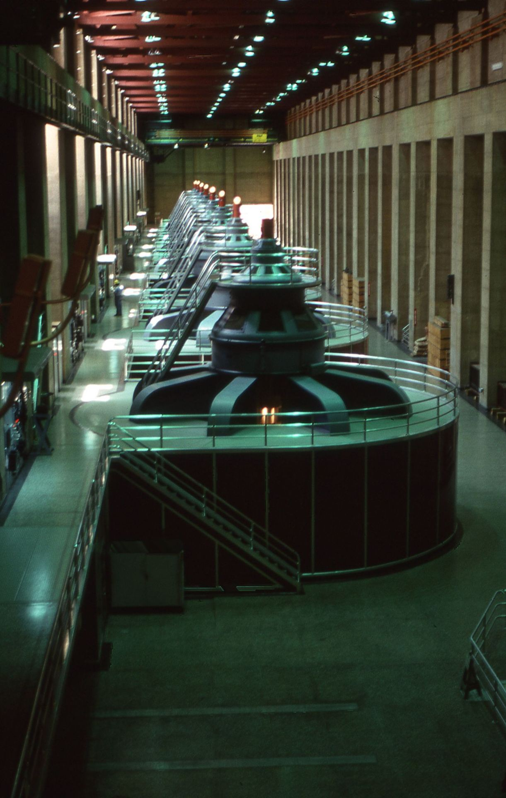
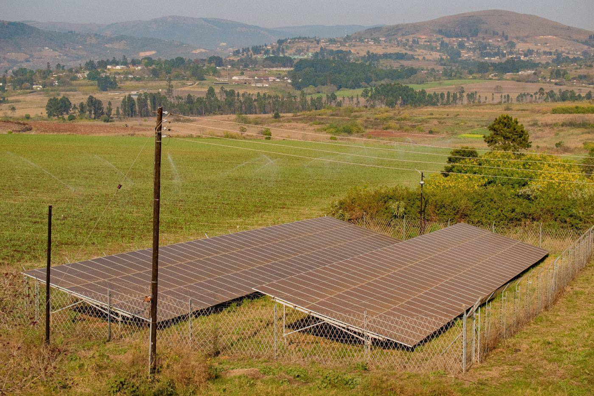

Produire et distribuer l'électricité : de la centrale au poste HTA.
Conception, réalisation et mise en service d'ouvrages de production et de distribution : centrales électriques, solaire photovoltaïque, éolien, aménagements hydroélectriques, postes HTA de plusieurs mégawatts, réseaux HTA/BT.
Puissance de la centrale à cycle combiné gaz de Radès, dont la supervision a fait partie du parcours à l'origine de l'agence.
La production et le transport de l'électricité forment le socle de tout projet d'électrification. C'est aussi le domaine où l'écart entre un ouvrage bien conçu et un ouvrage mal conçu se paie le plus cher : en disponibilité, en pertes en ligne, en coût de maintenance sur la durée de vie de l'installation.
Ce que nous réalisons
Centrales et unités de production
Conduite d'opérations de conception et de réalisation de moyens de production électrique. Le parcours fondateur de l'agence inclut la supervision d'une centrale thermique à cycle combiné de forte puissance, la gestion de postes de conversion d'énergie et la mise en service d'installations MT/BT sur des sites industriels sensibles.

Aménagements hydroélectriques
Les ouvrages hydroélectriques représentent, pour le Bénin, une voie de production décarbonée à examiner projet par projet. Chaque site impose sa propre équation : hydrologie, génie civil, ligne d'évacuation de l'énergie, impact environnemental et social. Nous abordons ces projets par l'étude de faisabilité avant toute promesse de puissance.

Solaire photovoltaïque & éolien
Le Bénin multiplie les appels à projets sur les énergies propres. AFB‑Dev élargit sa capacité de production vers le solaire photovoltaïque (centrales au sol, solaire commercial et industriel) et l'éolien, en mobilisant des partenaires techniques et financiers expérimentés sur ces filières : ingénierie EPC, équipementiers de premier rang, montages financés par des bailleurs internationaux. Cette capacité s'ajoute aux savoir-faire historiques en production thermique et hydroélectrique, pour répondre aux besoins actuels de diversification énergétique de l'État. Voir nos partenaires techniques & financiers →
Postes HTA et réseaux de distribution
Conception, réalisation et mise en service de postes HTA de plusieurs MW et de réseaux de distribution HTA/BT. Ce champ a représenté une part importante des opérations conduites au fil du parcours, en France comme à l'international, avec un travail récurrent sur la restructuration et l'extension de réseaux existants.
Notre manière de travailler
Un ouvrage électrique ne se juge pas à sa mise sous tension, mais à son comportement sur vingt à trente ans. Trois principes guident nos choix de conception :
- Raisonner en coût global. Le prix d'un poste ou d'un réseau se lit sur l'investissement additionné de l'exploitation et de la maintenance, pas sur le seul montant du marché de travaux.
- Concevoir pour la disponibilité. Redondances utiles, sélectivité des protections, accès aux organes de maintenance, disponibilité des pièces de rechange sur le marché local ou régional.
- Documenter pour transmettre. Schémas à jour, notices d'exploitation, protocoles d'intervention : ce qui permet à une équipe locale de reprendre l'ouvrage.
Un projet de production ou de distribution ?
Étude de faisabilité, dimensionnement, montage contractuel : parlons-en avant les chiffres.
En visio, au créneau qui vous convient : le rendez-vous s'inscrit directement dans l'agenda de Georges GANGBES.